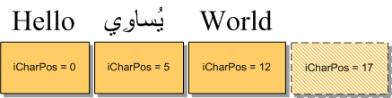
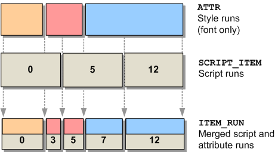
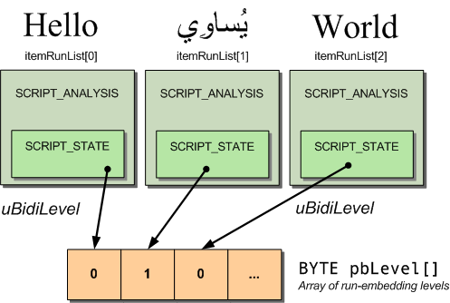

Uniscribe Mysteries
前回のチュートリアルでは、Uniscribe ScriptString API のごく簡単な概要を紹介しました。残念ながら、ScriptStringは、単一のフォントと色という制限があるため、Neatpadを使った私たちの目的には不十分です。そこで、このチュートリアルの目的は、「低レベル」のUniscribe APIを調べることです。私たちはNeatpadのテキスト表示に非常に特殊な要求を持っているので、マルチフォント、シンタックスカラーのテキストエディタのアプローチをとります。
以下に示すユニコードテキストの文字列が、今回の議論の多くのベースとして使用されます。真ん中のアラビア語のフレーズが選ばれたのは、ユニコードの特性が議論の文脈に適しているからであり、特別な意味があるわけではありません。
HelloيُساوِيWorld
上のアラビア語フレーズの「グリフ」のうち、2つの文字が他の文字列とは異なる色でハイライトされていることに気づくだろう。この2つの文字は「U+0633 ARABIC LETTER SEEN」と「U+0627 ARABIC LETTER ALEF」です。これらを単独で表示すると以下のようになります。
| سا | سا |
左のボックスには、コンテクストシェーピングでレンダリングされた2つの文字が表示されています（Internet ExplorerなどのUnicode対応のWebブラウザを使用しており、適切なフォントがインストールされていることを前提としています）。これが私たちが目指している動作です。右側のボックスには、文字がそれぞれ別々にレンダリングされています。両方のボックスが同じに見える場合は、ブラウザがUnicodeを正しく表示していません。
Unscribeが存在する大きな理由の一つは、上に示したような複雑な「シェーピング」動作を提供することです。私たち（プログラマー）が要求するのは、Unicode文字列を個々の文字に分割しないことです。これは、私たちが目指しているシェーピング動作を壊してしまうからです。したがって、このチュートリアルの主な目的は、文脈に沿ったシェーピングを維持しつつ、文字を個別に（異なる色で）描画する方法を説明することです。
Basic Outline
Uniscribe でテキストを描画するための基本的な手順を以下に示します。今のところ、ワードラッピング（および ScriptBreak API）は省略していることに注意してください。つまり、UTF-16 Unicodeの文字列があると仮定して、次のようにします。
ScriptItemizeScriptItemize - 文字列を個別のスクリプトまたは「アイテムラン」に分割します。- アイテムのランと、アプリケーションで定義された「スタイル」のランをマージして、よりきめ細かいアイテムを作成。
ScriptLayoutScriptLayout - アイテムの順番を変えることができます。
次に、各アイテム/ランについて、（ScriptLayoutの結果に基づいた順序で
- ScriptShape - 文脈に応じたシェーピング動作を適用し、各ランの文字を一連のグリフに変換します。
- ScriptPlace - ランの各グリフの幅と位置を計算する。
- 個々のグリフにカラーリング／ハイライトを施す。
- ScriptTextOut - グリフを表示します。
このアウトラインは、Microsoft が推奨する Uniscribe API の使用方法に沿っています。ただし、MSDN で言及されていない追加のステップ#6 (テキストの色付け) を含んでいることに注意してください。この違いの理由は、チュートリアルを進めていく中で説明します。ワードラッピングについては、Uniscribe を使用するというよりも、ラインバッファの管理の問題なので、後のチュートリアルに譲ります。
BOOL UspAnalyze (
USPDATA * uspData,
HDC hdc,
WCHAR * wstr,
int wlen,
ATTR * attrRunList,
UINT flags,
SCRIPT_TABDEF * tabDef,
USPFONT * uspFont
);
上記の関数プロトタイプは、UspAnalyzeという関数のものです。これは、私がNeatpadのために書いた新しいUspLibテキストレンダリングエンジンの一部です。UspAnalyzeはScriptStringAnalyzeと似ていますが、呼び出し側が文字列のフォントやスタイル情報を指定できるという機能が追加されています。
このチュートリアルの残りの部分では、上記のようなUniscribe APIの各側面に焦点を当て、各ステージに関連する問題を議論していきます。しかし、見ていく各段階は、UspAnalyze機能を実装するための重要なステップとなります。
1. ScriptItemize
ScriptItemizeは、通常、Unicodeテキストの文字列を表示する際に、最初に呼び出されるUniscribe関数です。この関数の目的は、文字列内のさまざまなスクリプトを識別し、この文字列をスクリプトに応じてアイテム（またはラン）に分割し、1つのスクリプトにつき1つのアイテムを作成することです。
| H | e | l | l | o | ي | ُ | س | ا | و | ِ | ي | W | o | r | l | d |
| 0048 | 0065 | 006C | 006C | 006F | 064A | 064F | 0633 | 0627 | 0648 | 0650 | 064A | 0057 | 006F | 0072 | 006C | 0064 |
| 0 | 1 | 2 | 3 | 4 | 5 | 6 | 7 | 8 | 9 | 10 | 11 | 12 | 13 | 14 | 15 | 16 |
上の表は、UTF-16の文字列「HelloيُساوِيWorld」がScriptItemizeでどのように扱われるかを示しています。文字は論理的な順序、つまりメモリに格納されたときに表示される順序で表示されています。文字列は3つのセグメントに分けられています。これらのアイテムは、純粋にそのスクリプトによって導き出されたものであり、文字列の中に存在するより細かいグリフや書記素クラスタによって導き出されたものではないことに注意してください。
HRESULT WINAPI ScriptItemize(
WCHAR * wszText, // pointer to unicode string
int wszLength, // count of WCHARs
int cMaxItems, // length of pItems buffer
SCRIPT_CONTROL * psControl,
SCRIPT_STATE * psState,
SCRIPT_ITEM * pItems, // out - array of SCRIPT_ITEM structures
int * pcItems // out - count of items
);
ScriptItemizeは、SCRIPT_ITEM構造体の配列を返し、テキストの段落内の「整形可能な」アイテム（スクリプト）ごとに1つずつ返します。構造体の数は、*pcItemsで返されます。上記の例では、*pcItemsには「3」という値が入ります。このSCRIPT_ITEM構造体は非常にシンプルで、以下のようになります。
struct SCRIPT_ITEM
{
int iCharPos;
SCRIPT_ANALYSIS a;
};
SCRIPT_ITEM::iCharPos変数は、文字列内のテキストの各「ラン」の開始位置を特定するために使用されます。SCRIPT_ANALYSIS子構造は、読み取り方向や、ランをグリフに変換するために使用すべきシェーピング・エンジンなど、ランに関するさまざまな追加情報を保持する。
今回の画像は、Unicode文字列がSCRIPT_ITEM構造体の配列で表現されている様子を示しています。

配列の最後には、文字列の終わりを示す「隠れた」SCRIPT_ITEMが常に存在することに注意してください。これにより、次のようにして各SCRIPT_ITEMの長さを計算することができます。
itemLength = pItems[i+1].iCharPos - pItems[i].iCharPos;
ここでは、いくつかの一般的なポイントを紹介します。ScriptItemize の最初のパラメータは WCHAR * であることに注意してください。この関数にはANSIバージョンがありませんので、今後Neatpadは純粋なUnicodeアプリケーションとなります。Microsoft Layer for Unicode (MSLU)が使えなければ、Win9xのサポートをやめなければなりません。
そのため、通常は何らかのループを使用し、ScriptItemizeの呼び出しが成功するまでSCRIPT_ITEMバッファのメモリをどんどん割り当てていく必要があります。
SCRIPT_CONTROL scriptControl = { 0 };
SCRIPT_STATE scriptState = { 0 };
SCRIPT_ITEM *itemList = 0;
int itemCount;
do {
itemList = realloc(itemList, ... );
hr = ScriptItemize(
wstr,
wlen,
allocLen,
&scriptControl,
&scriptState,
itemList,
&itemCount);
if(hr != S_OK && hr != E_OUTOFMEMORY)
break;
} while(hr != S_OK);
注意点としては、SCRIPT_CONTROLおよびSCRIPT_STATE構造体の内容がすべて「0」に初期化されている場合でも、常に完全に初期化されたSCRIPT_CONTROLおよびSCRIPT_STATE構造体をScriptItemizeに渡すようにしてください。これらの構造体が両方とも指定されていなければ、文字列を項目化する目的で、Unicode双方向アルゴリズムは使用されません。このため、状況によってはアイテムランの位置が正しく認識されないことがある（LTRとRTLのスクリプトが同じ文字列に現れるなど）。
興味深いことに、MSDNによると、SCRIPT_CONTROLとSCRIPT_STATEがNULLの場合、項目の設定は純粋に文字コードに基づいて行われます。NULLでない場合は、上述のように完全な双方向アルゴリズムが適用される。後者の場合は、段落全体がメモリ内になければならない。この道に進むつもりはありませんが、これは、段落全体としてメモリに存在することができない任意の長いテキスト行を処理するための方法を示唆しています。
2. Merging Style Runs
ScriptString関数ではなくUniscribeを直接使用している理由は、テキストの色やフォントの選択をより細かく制御したいからです。そして、（ScriptItemizeを呼び出した後に）Microsoftのドキュメントでは、「アプリケーション定義」のスタイルランをScriptItemizeから返されるアイテム情報にマージするようにアドバイスされている点に到達しました。以下、MSDNからの引用です。
"Uniscribe を使用する前に、アプリケーションは段落をランに分割します。つまり、同じスタイルを持つ文字列です。スタイルはアプリケーションが実装したものに依存しますが、一般的にはフォント、サイズ、色などの属性を含みます.... アイテム情報とラン情報をマージして、単一のスタイル、スクリプト、方向性を持つランを生成します。"
この言葉は、Uniscribeのドキュメント全体の中で、最も混乱し、不可解で、誤解を招くような記述のひとつです。問題は、スタイルランとアイテムランをどのようにマージすべきか、あるいは「スタイルラン」とは何かについて、MSDNには何のヒントもないことです。ランのマージ」の方法についてはもう少し後に説明しますが、まず「スタイルラン」という言葉の意味を理解しましょう。
もちろん、スタイルランはアプリケーションが望むものであれば何でもあります。基本的には、特定の属性を割り当てられたテキストの範囲です。Neatpadの場合、色とフォントを表すためにATTR構造を使用しました。テキストの文字列と属性リストは次のようになっています。
WCHAR buff[MAXLINELEN];
ATTR attr[MAXLINELEN];
しかし、Uniscribeと「反転ハイライト」スキームに移行してからは、ATTR構造を多少拡張し、もはや「1文字に1つのATTR」ではなくなりました。
struct ATTR
{
COLORREF fg; // foreground text colour
COLORREF bg; // background text colour
int len : 16; // length of this run (in WCHARs)
int font : 7; // font-index
int sel : 1; // selection flag (yes/no)
int ctrl : 1; // show as an isolated control-character
};
前景色と背景色に変更はありません。新しい構造メンバーの詳細は以下の通りです。
- 最初の変更点は、属性ランの長さ（文字数）を表す新しい長さフィールドです。これは、Uniscribeが1文字ではなく「ラン」を扱うことを好むためです。既存のNeatpadのコード（1文字につき1つのATTRを想定しています）にはまだ手を加えず、この追加フィールドは、Uniscribe APIを扱う際の「内部的なハウスキーピング」のためだけに使用します。
- fontフィールドは以前と変わりません。フォントテーブルへのインデックスとして使用されます。
- sel booleanは、テキストランの選択状態を示すために使用されます。言い換えれば、ランが選択ハイライトでレンダリングされるべきかどうかです。これは非常に重要な変更点で、もはや選択色を ::fg と ::bg に格納することはなく、文字（またはテキストの範囲）が選択されているかどうかを示すために別のフラグが使用されます。選択色を ::fg と ::bg に保存しなくなりました。
- ctrlブーリアンは最後に追加されたもので、text-run内の文字を通常の文字としてレンダリングするか、あるいは個別のコントロール文字としてレンダリングするかを指定するために使用されます。
現在直面している問題は、元の文字配列内のスクリプトの位置を特定するSCRIPT_ITEMリストと、元の文字列内のスタイルの範囲を特定するATTRリストという、関連性のない2つのリストがあることです。MSDNがこの2つの無関係なリストをマージするように指示している意味を理解する必要があります。
SCRIPT_ITEM *itemList;
ATTR *attrList;
基本的なプロセスは、style-runとitem-runを一緒に見て、文字列の中であるタイプのランが他のタイプと重なっている位置を特定することである。例えば、SCRIPT_ITEMのランが、2つのATTR構造間の境界位置と重なっているとする。このSCRIPT_ITEMは、それぞれが異なるATTRスタイル・ランを表す2つの新しい部分に分割しなければならない。
SCRIPT_ITEM::iCharOffset変数は、元の文字列内の新しい位置を指すように変更され、ITEM_RUN構造体の配列は、これらの新しい文字位置を保持するように構築されます。SCRIPT_ITEMの他の内容（すなわち、SCRIPT_ANALYSIS構造体）は、結果として生じる2つの部分の間で複製されなければならない。これは次のように考えてください。ScriptItemize関数は、まず文字列をスクリプトに基づいて個別の単位に分割します。マージ処理では、さらに文字列をスタイルに基づいてより小さな単位に分割します（2つの間に重複がある場合）。
次の図は、「スタイル・マージ」の意味を説明するためのものです。

さて、ここで問題があります。SCRIPT_ITEMを分割すると、Uniscribeエンジンのコンテクストシェーピング動作に影響を与えないでしょうか？簡単に言うと、はい、文字列を分割することで、Uniscribeのシェーピング動作を壊してしまいます。そして、この問題を回避する魔法の方法はありません。
上の図では、ATTRスタイルランの横に「フォントのみ」と書いてあるのに気づくかもしれません。これは意図的なもので、マイクロソフトはスタイルに基づいて文字列を分割するようにアドバイスしていますが、これは実際には正しくありません。実際、この段階で色の違いによって文字列を分割することは（選択／構文強調の目的で）間違っています。
スタイルランとアイテムランを統合する際には、フォントのみを考慮し、カラー情報は完全に無視しなければなりません。
願わくば、私の言いたいことが十分に伝わっていることを願います。マイクロソフトのドキュメントのアドバイスに従って、文字列をカラーリングする方法を見つけ出そうと1週間ほど費やしましたが、その方法が間違っていることに気づきました。つまり、ScriptShape と ScriptPlace が呼び出された後、ScriptTextOut が呼び出される直前に適用しなければなりません。これは、ATTR構造体に色を保存できないということではなく、「マージ」の実行中にこの情報を使用しないということです。したがって、同じフォントを共有するATTR構造体は、「分割」を行う前に、マージ処理によって1つの実行ファイルにまとめなければなりません。
さて、ATTR構造体とSCRIPT_ITEM構造体を分割したら、それらをどうすればいいのでしょうか？私は、SCRIPT_ITEM構造体とATTR構造体から必要なコンテンツを含むITEM_RUNという新しい構造体を定義しました。
struct ITEM_RUN
{
SCRIPT_ANALYSIS analysis; // from the original SCRIPT_ITEM
int charPos; // character-offset within the original string
int len; // length of run in WCHARs
int font; // only font is required, not colours
...
};
ITEM_RUNは基本的に、アイテムランと一緒に「フォーマット」情報を保持することができる。文字列をアイテム化した後は、Uniscribeは各ランのSCRIPT_ANALYSIS構造体のみを気にする。ITEM_RUN構造体の他のメンバーは、我々自身の私的使用のためのものである。item-run-listは、文字列のUSPDATA構造体の中の、itemRunListフィールドに格納される。
struct USPDATA
{
ITEM_RUN * itemRunList;
int itemRunCount;
...
};
実際、これはUniscribeプログラミングの中でも最も厄介な点のひとつであり、1998年の記事「Supporting Multilanguage Text Layout and Complex Scripts with Windows NT 5.0」に掲載されている7年前のCSSampアプリケーション以外に、Microsoftがこれをどのように実行すべきか全くヒントを与えていないことも手伝って、このような状況になっています。
この問題を解決するために、BuildMergedItemRunListという新しい関数を書きました。この関数は、与えられたUniscribe文字列のITEM_RUN構造体の配列を構築します。この関数は、ScriptItemize を呼び出し、その結果を attrList で指定されたスタイルランにマージするという 2 つのタスクを実行します。
BOOL BuildMergedItemRunList(
USPDATA * uspData, // in/out - holds results of merge
WCHAR * wstr,
int wlen,
ATTR * attrList,
);
BuildMergedItemRunList は USPLib のプライベート関数であり、USPDATA オブジェクトを構築する際の最初のステップの 1 つとして UspAnalyze によって呼び出されます。単独では、この関数は次のように使用されます。
ATTR attrList[2] =
{
{ RGB(0xff, 0x00, 0xff), RGB(0,0,0), 5, 0, 0 }, // five characters using font#0
{ RGB(0xAA, 0x22, 0xAA), RGB(0,0,0), 6, 1, 0 } // six characters using font#1
}
BuildMergedItemRunList(uspData, L"Hello World", 11, attrList);
Uniscribe を使用する大きな利点は、contextual-shaping と complex-script のサポートであることを理解してください。SCRIPT_ITEM構造を分割してUnicode文字列をセクションに分けることは、私たちが求めるスクリプトシェーピングの動作を壊します。分割されたSCRIPT_ITEMの数を最小限に抑えるようにしなければなりませんが、この段階で色の違いに基づいて分割することは間違っています。Uniscribeでテキストを表示する前に、NeatpadはすでにATTRスタイルリストを構築していますが、これらのリストのカラー情報を使用するのは、シェーピングが行われた後でなければなりません。
最後に、もしあなたが単一のフォントしか扱わないテキストエディタを作っているのであれば、この段階を完全にスキップして、多くの作業を省くことができます (シンタックスカラーリングが不要な場合は、ScriptString API を使用することもできます!)。
3. ScriptLayout
Uniscribeの次のステージは、マージされたアイテムランを取得し、表示のための正しい視覚的順序を確立することです。ここでは、BuildMergedItemRunListによって生成されたITEM_RUN構造体の配列を使用する。これは重要なステップであり、双方向のテキストを正しく表示するための鍵となります。文字列に右から左へのスクリプトが含まれていない限り、並び替えは必要ないことに注意してください。しかし、どのようなスクリプトや言語が処理されるかは実行時にならないとわからないので、この作業を行う必要があります。
Uniscribe ScriptLayout 関数が呼び出されて並び替えを行い、Unicode Bidirectional Algorithm を使用してこのタスクを達成します。
HRESULT WINAPI ScriptLayout(
int cRuns,
BYTE * pbLevel, // in
int * piVisualToLogical, // out
int * piLogicalToVisual // out
);
ScriptLayoutは、文字列のbidiラン埋め込みレベルを表すBYTEの単純な配列を入力とする（アイテムランごとに1BYTE）。このbidi run-embeddingの値は、ITEM_RUNごとにSCRIPT_STATE::uBidiLevel変数に格納される。ScriptLayoutを呼び出す前に、このBYTE[]配列を構築するかどうかは我々次第である。

uBidiLevelは、SCRIPT_STATE構造体のメンバーとして、各SCRIPT_ANALYSISの奥深くに埋められています。BYTE[]配列が構築されると、ScriptLayout APIを呼び出すことができます。整数のさらなる配列を返すためだけに、かなりの手間がかかっているように思えますが、これが現実なのです。おそらくUniscribeの開発者は、ユーザーが独自のITEM_RUN（または類似の）構造を作成してマージすることを想定して、このような方法をとったのでしょう。
VOID BuildVisualMapping( ITEM_RUN * itemRunList,
int itemRunCount,
int visualToLogicalList[] // out
)
{
int i;
BYTE * bidiLevel = malloc(itemRunCount * sizeof(BYTE));
// Manually extract bidi-embedding-levels ready for ScriptLayout
for(i = 0; i < itemRunCount; i++)
bidiLevel[i] = itemRunList[i].analysis.s.uBidiLevel;
// Build a visual-to-logical mapping order
ScriptLayout(itemRunCount, bidiLevel, visualToLogicalList, NULL);
// free the temporary BYTE[] buffer
free(bidiLevel);
}
上記の関数は、ITEM_RUN構造体の配列を与えて、ビジュアルマッピングリストを取得する方法を示しています。このリストは、文字列を表示するときや、マウスやカレットのヒットテストなど、視覚的な順序の処理を必要とする作業を行うときに必要です。
int xpos = 0, ypos = 0;
for(visualIdx = 0; visualIdx < itemRunCount; visualIdx++)
{
int logicalIdx = visualToLogicalList[visualIdx];
ITEM_RUN *itemRun = itemRunList[logicalIdx];
ProcessRun(itemRun, xpos, ypos);
xpos += itemRun->width;
}
このような処理ループが必要なのは、右から左に書かれたスクリプト（アラビア語やヘブライ語など）を扱っていても、テキスト表示の際には、「後ろ向き」のランを含めて、すべてを左から右に描いているからです。visual-to-logicalリストは、視覚的なインデックスから論理的なインデックスにマッピングする方法を提供し、常に適切な順序でランを処理することを保証します。
Coming up in Part 13
このチュートリアルをお読みになればお分かりになると思いますが、Uniscribe は非常に複雑なビジネスです。残念ながら、これは必要悪です。今日書かれているすべてのソフトウェアは、ユニコードに完全に準拠している必要があるからです。Uniscribe を無視できるとは決して思わないでください。私たちは Unicode をサポートする必要があり、それがもたらす複雑さを受け入れなければなりません。ASCII/英語のテキスト表示の時代は終わりました。
これまでに、Unicodeテキストの文字列を分割して、一連のアイテムランに並べ替えるプロセスを説明してきました。しかし、UspAnalyze関数の実装はまだ半分しかできていません。次のチュートリアルでは、作成したアイテムランをもとに、ScriptShape と ScriptPlace API を使ってグリフと幅の情報を生成する方法を説明します。